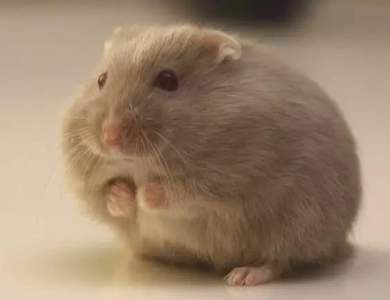

- 首页
- 会员
- 宠物百科
- 管理员注册
了解龙猫
龙猫，龙猫也是近几年比较流行的宠物，它的外形与兔子和松鼠十分相似，体型比较小，它的头像兔子尾巴像松鼠。
还有一双很大很亮的眼睛，鼻子两侧有许多的胡须，嗅觉非常灵敏。
也根据颜色分为了很多品种，比如：纯黑色龙猫、纯白色龙猫、粉红色龙猫、银斑龙猫等。
小型宠物简介
 小宠，顾名思义就是小型宠物的意思，指龙猫，仓鼠，兔子，刺猬，香猪，荷兰猪，小猫一类的宠物。也可以说是意义上的萌宠，深受广小仙女的喜爱。小宠也慢慢的从传统宠物大类中区分出来。
小型宠物长像奇特，小巧玲珑，活泼灵敏，十分逗人喜爱，而且异味不浓，具有玩赏价值，适宜做宠物在室内饲养，因此在我国各地被视为宠物。小型宠物一般都是夜行性动物，日间是睡觉，晚上才活动。他们通常到晚上7～10点（部分0～4点）才是最活跃。所以饲主要给它们日间好好休息，晚上才和它们玩。任意改变夜行性动物的习惯容易会引起短寿。
常见小型宠物分类
第一种：仓鼠，这种宠物比较小，仓鼠还根据颜色分为很多品种比如：布丁仓鼠、银狐仓鼠、三线仓鼠、金丝熊仓鼠、紫衣仓鼠等等。
第二种：龙猫，龙猫也是近几年比较流行的宠物，它的外形与兔子和松鼠十分相似，体型比较小，它的头像兔子尾巴像松鼠。
第三种：松鼠，松鼠拥有着一双炯炯有神的大眼睛，外表看起来十分机灵，细长的尾巴和身体的长度比较相似。
免责声明：狗铺子网所有宠物狗交易信息内容系用户自行发布，其真实性、合法性由发布人负责，该商场不提供任何保证，亦不承担任何法律责任！
张潇 Copyright © 2008 - 2020 congwushangdian.com All Rights Reserved